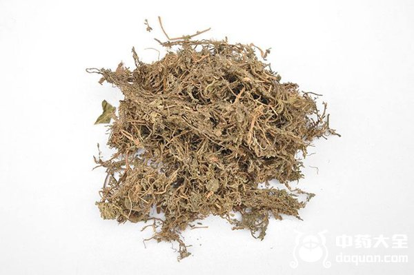
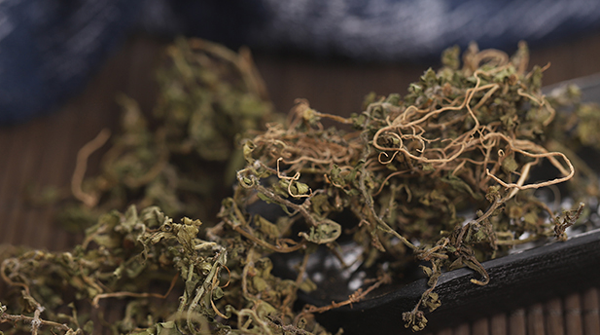
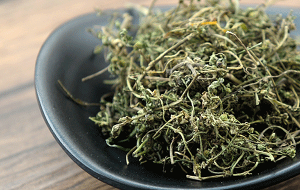
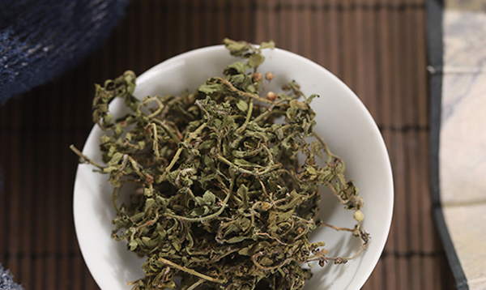
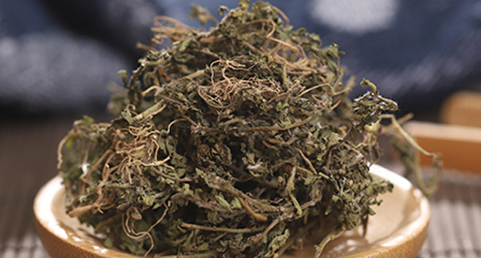

原文连接:https://www.daquan.com/post/10744.html
鹅不食草别名石胡荽，是一种野生植物，冬秋二季采摘，既可以鲜用也可以干用，他具有散寒止痛、祛风、抗病毒、通窍止咳等功效，下面中药大全小编和大家里具体了解下鹅不食草的功效与作用。

鹅不食草的功效与作用
1、抗菌抗毒
鹅不食草里面含有多种天然抗菌成本，是抗菌抗病毒的神奇，它里面的抗菌物质对人体的白色葡萄球菌、白喉杆菌、流感病毒的病原有清除、抑制的作用，可以减少它们对人体组织细胞的侵害。
2、化痰止咳

鹅不食草是直接入肺经的中药材，它里面含有的挥发油、乙醇是天然的花坛成分，能够起到扩张气管的作用，从而让人呼吸顺畅、有利痰液排除、对咳嗽症状也有缓解。
3、消炎
鹅不食草里面含有与抑制炎性介质组胺和5一羟色胺的释放有关的物质，对于急慢性的炎症起到很好的抑制作用，对身体的其他炎症也有不错的功效。
4、抗癌防癌
鹅不食草含有一种抗病毒成分，可以有效的抑制人体癌症病毒的活性，减少致癌物质亚硝酸铵的产生，防止癌变，平时人们多食用鹅不食草可以预防癌症，还可以增强人体的组织细胞活性，对身体有好处。
5、抗过敏

鹅不食草含有乙醇和乙醚二种物质，这二种物质属于天然的抗过敏物质，能够增强人体的免疫能力，减少过敏症状的发生，平时喜欢过敏的人可以多食用鹅不食草。
鹅不食草的作用
1、治疗鼻炎

鹅不食草适用于急性鼻炎、慢性单纯性鼻炎、肥厚性鼻炎、变态反应性鼻炎等症状。服用后头痛、鼻塞等症状消失或减轻。
用法：
1、把鹅不食草研成细粉，然后吸入鼻孔，每日数次。
2、用棉花浸湿拧干后，包药粉少许，卷成细条塞鼻，20～30分钟后取出，每日1次。
3、制成油膏纱条，放置鼻腔内，1小时后取出。用药后除初起有喷嚏、流泪与流鼻涕外，余无不良反应。
2、治疗百日咳
用5两鹅不食草的鲜品制成煎液500毫升，再加入等量糖浆。按患儿年龄和体重，每日用20～40毫升，4次分服。
3、治疗疟疾

将鹅不食草制成注射剂(每毫升含生药2克)，在发作前2小时注射1次，连用3月。每次剂置：1～3岁2毫升，4～8岁3毫升，9～14岁4毫升，15岁以上5毫升。
4、治疗软组织损伤
将鹅不食草研成粉末，成人每次用2～3钱(小儿减半)，以黄酒6～8两(不饮酒者用酒水各半)、红糖1～2两同煮(沸后密盖勿令泄气)，过滤后温服;药渣趁热敷于患部。
5、治中风不省人事
急以鲜鹅不食草适量，揉成小丸，塞入鼻内。或以鹅不食草干品研末，吹入鼻内。
6、治跌打损伤
(1)鲜鹅不食草30g，猪瘦肉120g，米酒适量、炖后食肉饮汤。
(2)鲜鹅不食草30g，捶酒炖加白糖服。并用药渣擦伤处。
(3)鲜鹅不食草30g，加田蟹(或有蟹)捶酒炖服。
7、治关节炎
鲜鹅不食草30g，瘦猪肉120g，加酒适量，炖后服汤食肉。
8、治感冒鼻塞
鹅不食草15g，葱头5个，水煎服。
9、治小儿疳积
鲜鹅不食草10g捶烂，入鸡蛋内，煨熟食。
10、治腹痛、吐泻

鹅不食草30g，捶汁，温开水冲服。
11、治结膜炎
鲜鹅不食草、野菊花各10至15g，水煎加白糖为引服用。
12、治目生翳点
鹅不食草揉盐，塞于患眼对侧鼻孔。
13、治慢性鼻炎
鹅不食草揉烂塞鼻孔。本品内服生品15至30g，干品10至15g。外用适量。
鹅不食草的副作用
过量服用是鹅不食草最大的禁忌，它虽然无毒，但是却含有多种药用成分，如果过量服用会加重肠胃负担，容易让人们出现胃痛和恶心呕吐以及腹痛等不良症状，对人体健康不利。
以上为鹅不食草的功效与作用的所有内容，希望对您有所帮助。